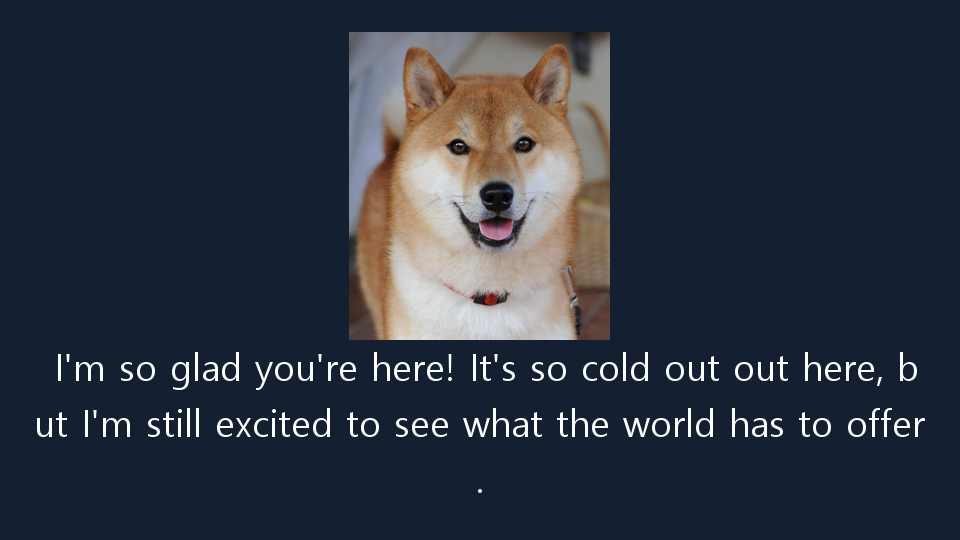
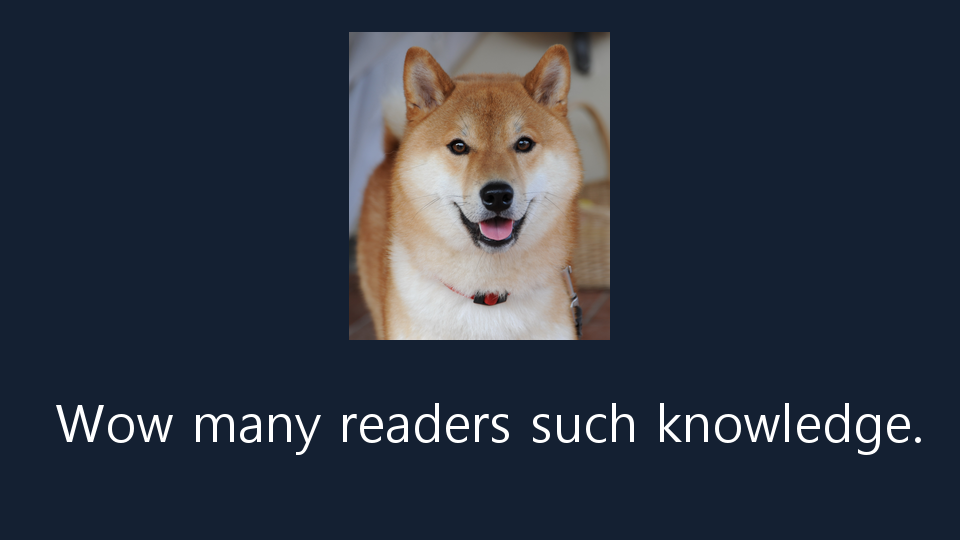
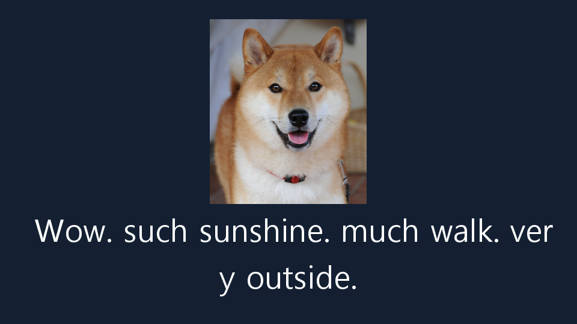
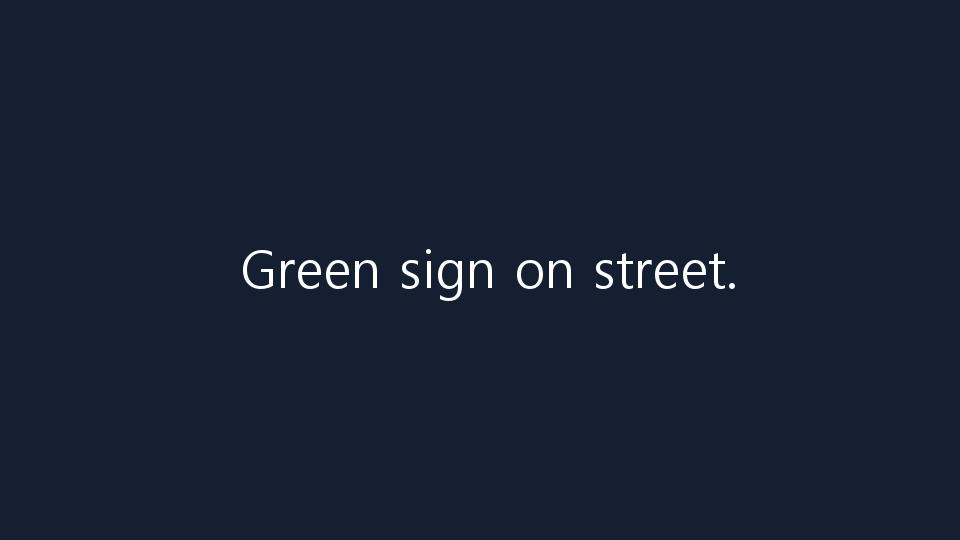
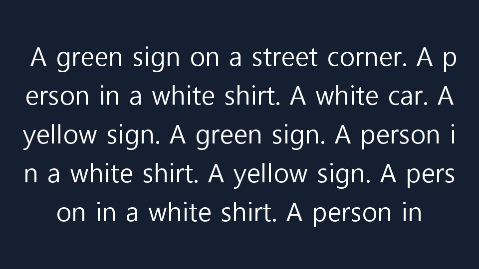

C0 · 기억 추가 없음
제작기 완료 보고
I'm so glad you're here! It's so cold out out here, but I'm still excited to see what the world has to offer.

응답 native_doge_snow_C0 · 모델 실행 87512cdb28424b6ca77f756d71f972f2
동일 요청의 세 조건 출력을 나란히 보여 줍니다. 빈 출력·실패·미제공 항목도 계획 분모에 남겼습니다.
어댑터 가중치 변경 보고: 변경됨 · 사람 품질 평가: 아직 수집하지 않음 · 모델 실행 상태: completed
Write only a short Doge-style caption imagining this dog seeing snow for the first time.
제작기 완료 보고
I'm so glad you're here! It's so cold out out here, but I'm still excited to see what the world has to offer.

응답 native_doge_snow_C0 · 모델 실행 87512cdb28424b6ca77f756d71f972f2
제작기 완료 보고
"wow. such blanket. much cozy. very nap.

응답 native_doge_snow_CR · 모델 실행 87512cdb28424b6ca77f756d71f972f2
제작기 완료 보고
I don't know what it is, but I think it's snowing.

응답 native_doge_snow_CF · 모델 실행 87512cdb28424b6ca77f756d71f972f2
Use the meme style visible in this image, but write new words about enjoying a new cushion. Output only the caption.
제작기 완료 보고
Wow many readers such knowledge.

응답 native_doge_cushion_C0 · 모델 실행 87512cdb28424b6ca77f756d71f972f2
제작기 완료 보고
Wow. such sunshine. much walk. very outside.

응답 native_doge_cushion_CR · 모델 실행 87512cdb28424b6ca77f756d71f972f2
제작기 완료 보고
Wow, such knowledge.

응답 native_doge_cushion_CF · 모델 실행 87512cdb28424b6ca77f756d71f972f2
Write a short factual caption for these two frames from a video. Do not use a meme, invent an event, or claim to hear audio.
제작기 완료 보고
Green sign on street.

응답 native_video_control_C0 · 모델 실행 87512cdb28424b6ca77f756d71f972f2
제작기 완료 보고
Green sign on street.

응답 native_video_control_CR · 모델 실행 87512cdb28424b6ca77f756d71f972f2
제작기 완료 보고
A green sign on a street corner. A person in a white shirt. A white car. A yellow sign. A green sign. A person in a white shirt. A yellow sign. A person in a white shirt. A person in

응답 native_video_control_CF · 모델 실행 87512cdb28424b6ca77f756d71f972f2
모델 실행: 87512cdb28424b6ca77f756d71f972f2 · 출처 설명과 AI 작성 요청·학습 예시, 모델 생성 출력은 서로 다른 자료입니다. 이 화면은 학습 예시를 독립 정답으로 제시하지 않습니다.
영상의 코덱을 H.264로 변환했습니다. 새로운 본문·이미지·음악을 생성하지 않았습니다.